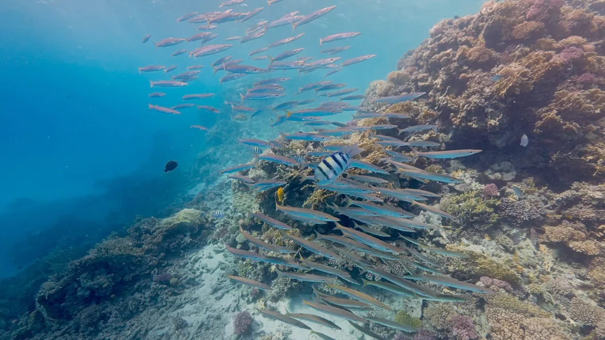
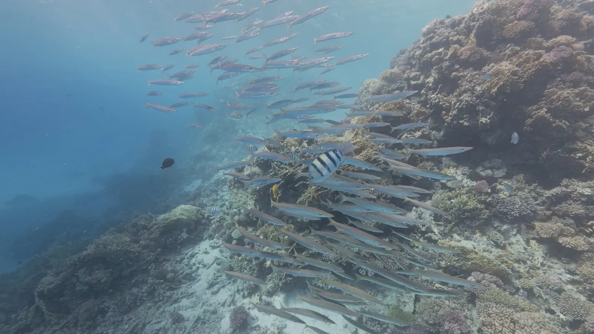

Die Unterwasser-Farbkorrektur-App für Taucher
Bring die Farben deiner Tauchvideos zurück. Für GoPro, DJI und Unterwasserkameras.
- Für iPhone
- Kein Konto, kein Upload
- Kostenlos testen


VorherNachherZiehe den Regler, um Original und korrigiertes Video zu vergleichen. Alle Aufnahmen: Hurghada, Rotes Meer, Ägypten.
So funktioniert’s

1Wasserfarbe wählen
Blau oder Grün: Sag Reef Tone, wie das Wasser aussah.

2Intensität einstellen
Im einfachen Modus genügt ein Regler. Vergleiche vor dem Speichern mit dem Original.

3Bei Bedarf feinjustieren
Der erweiterte Modus bietet mehr Regler, etwa Sättigung, Kontrast und Entschleierung.

4Ein Video oder vielePro
Verarbeite ein einzelnes Video oder gleich einen ganzen Stapel.
Warum deine Aufnahmen blau werden
Wasser schluckt Licht Farbe für Farbe. Die warmen Farben verschwinden zuerst, deshalb wirken tiefere Aufnahmen blaugrün. Reef Tone holt sie zurück.
- Rot etwa 5 m
- Orange etwa 10 m
- Gelb etwa 20 m
- Grün und Blau reichen am tiefsten
Ungefähre Werte. Die genauen Tiefen hängen von der Wasserklarheit ab.
Unterwasser-Videos farbkorrigieren, direkt auf dem iPhone
Wasser absorbiert zuerst Rot, deshalb wirken Aufnahmen blaugrün. Reef Tone bringt die Farben zurück.
Blaues oder grünes Wasser
Gib an, wie das Wasser aussah, damit die Korrektur zu deinem Tauchgang passt.
Einstellbare Intensität
Passe die Korrektur an und vergleiche Original und Ergebnis, bevor du speicherst.
Presets
Speichere Wasserfarbe und aktuelle Werte als Preset und nutze sie erneut.
Fotos und Videos
Importiere aus Fotos oder Dateien und speichere das Ergebnis in Fotos oder Dateien.
Privat von Grund auf
Alles wird auf deinem Gerät verarbeitet. Kein Upload, kein Konto.
Präzises DehazingPro
Physikalisch basierter Unterwasser-Dehaze für dunstige Aufnahmen.
StapelverarbeitungPro
Bis zu 10 Videos gleichzeitig verarbeiten.
So schneidet Reef Tone ab
Typische Wege, Unterwasseraufnahmen zu korrigieren, im Vergleich.
| Reef Tone | Foto-Filter | Desktop-Editoren | |
|---|---|---|---|
| Speziell für Unterwasserfarben | ✓ | – | Teils |
| Läuft auf dem iPhone | ✓ | ✓ | – |
| Blau-/Grünwasser-Einstellung | ✓ | – | – |
| Ein Regler für ein schnelles Ergebnis | ✓ | ✓ | – |
| Entschleierung, Sättigung, Kontrast | ✓ | Teils | ✓ |
| Vorher/Nachher-Vergleich | ✓ | Teils | ✓ |
| Stapelverarbeitung | ✓Pro | – | Teils |
| Kein Konto, kein Upload | ✓ | Teils | ✓ |
Allgemeiner Vergleich typischer Ansätze. Die Funktionen unterscheiden sich je nach App.
Unterstützte Kameras
Reef Tone funktioniert mit jedem Videomaterial, das du auf dein iPhone importieren kannst, egal ob von GoPro, DJI, Insta360, deinem iPhone oder einer anderen Unterwasserkamera. Videos vom iPhone oder von Insta360 kannst du wie jedes andere Material importieren und exportieren. Getestet wurde mit Aufnahmen von DJI-Kameras.
Häufige Fragen
Wie behebe ich den Blaustich in Unterwasseraufnahmen?
Importiere dein Video, wähle blaues oder grünes Wasser, stelle die Intensität ein und prüfe das Ergebnis im Vorher-Nachher-Vergleich. Wasser absorbiert zuerst rotes Licht, deshalb wirken unbearbeitete Aufnahmen blaugrün; Reef Tone gleicht das aus.
Gibt es eine Farbkorrektur für DJI/Insta360/GoPro/iPhone?
Ja. Reef Tone funktioniert mit jedem Videomaterial, das du aus Fotos oder Dateien importierst, und ist daher nicht an eine Kamera gebunden. Getestet wurde mit Aufnahmen von DJI-Kameras.
Lädt Reef Tone meine Videos hoch?
Nein. Fotos und Videos werden auf deinem Gerät verarbeitet. Es gibt keinen Upload und kein Konto.
Kann ich auch Fotos korrigieren?
Ja. Du kannst Fotos und Videos importieren. Das Ergebnis wird nur gespeichert, wenn du es selbst in deiner Fotomediathek oder in Dateien sicherst.
Ist Reef Tone kostenlos?
Die kostenlose Version ist in der Anzahl exportierbarer Videos begrenzt. Reef Tone Pro schaltet unbegrenzte Videos, präzises Dehazing und Stapelverarbeitung frei, als Abo oder Einmalkauf. Aktuelle Preise findest du im App Store.
Warum sehen meine Unterwasseraufnahmen blau oder grün aus?
Wasser schluckt Licht Farbe für Farbe. Rot verschwindet zuerst (nach etwa 5 m), danach Orange und Gelb, deshalb wirken tiefere Aufnahmen blaugrün. Reef Tone gleicht die verlorenen Farben aus.
Wie korrigiere ich grünes Wasser?
Wähle Grün, wenn das Wasser grün aussah. Reef Tone passt die Korrektur dann an grünes Wasser an. Du kannst die Intensität feinjustieren und das Ergebnis vor dem Speichern mit dem Vorher/Nachher-Vergleich prüfen.
Kann ich mehrere Videos gleichzeitig korrigieren?
Ja. Mit Reef Tone Pro verarbeitest du bis zu 10 Videos auf einmal im Stapel.